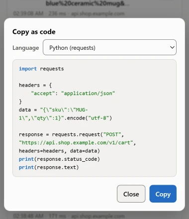

Side by side
| RequestFox | DevTools Network panel | |
|---|---|---|
| What it lists | API calls: fetch, XMLHttpRequest, WebSocket, server-sent events | Every resource the page loads [1] |
| Keeps the list | Every session, in History, to reopen and compare | Across page loads with Preserve log [2] |
| Finding problems | Flags failed, slow, duplicate and retried calls, N+1, errors inside a 200, expired tokens, changed shapes | You filter and read: by domain, status code and other properties, or inverted [2] |
| Changing answers | Mock, fail, slow, throttle or pause a call; labelled in the log | Local overrides of content and response headers, saved in a folder you choose [3] |
| Export | HTML report, HAR, CSV, JSON, Postman, OpenAPI 3.0, tests, code in 15 languages | HAR (sensitive headers left out), Copy as cURL and as fetch [2] |
| Browsers | Chrome and Firefox | Chrome (Firefox has its own Network Monitor) |
Where DevTools is stronger
- It is already there: nothing to install, no site access to allow.
- It shows every resource (scripts, styles, images, fonts), not only API calls [1].
- Network throttling and request blocking for the whole page [1].
- Each event of an open stream shows live; RequestFox keeps a stream's first 64 KB.
What RequestFox adds
- Problems are pointed out instead of found by eye, with the reason in plain words.
- Each call is tied to the click or form submit that caused it.
- Sessions survive closing DevTools and the browser, and two runs can be compared.
- Per-endpoint checks, an OpenAPI contract, suites and a CLI for CI.
- Authorization headers, cookies and secret-shaped fields redacted by default in what you view and export.
Copy a call as code
DevTools copies a request as cURL or as fetch [2]. RequestFox copies any captured or composed request as code in 15 languages, cURL for bash and Windows cmd included, and keeps {{variables}} that hold secrets as written.

Sources
- Chrome for Developers, "Inspect network activity". Checked 1 November 2026. developer.chrome.com
- Chrome for Developers, "Network features reference". Checked 1 November 2026. developer.chrome.com
- Chrome for Developers, "Override web content and HTTP response headers locally". Checked 1 November 2026. developer.chrome.com
Something here out of date? Tell us at the address in the privacy policy and we will fix it.